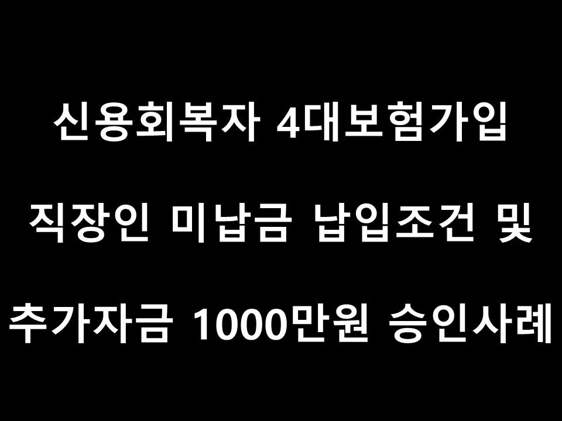
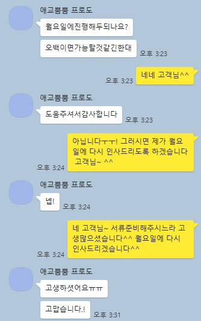
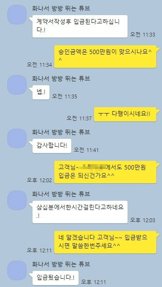

신용회복자 4대가입직장인 미납금 납입조건 및 추가자금 1000만원 승인사례!!!

안녕하세요~ 뱅크앤론 상담원 백진주입니다~~^^
오늘은 제가 상담드린 윤**고객님의 대출 사례를 안내해 드리겠습니다.
윤**고객님께서는 4대보험이 가입되어 있는 신용회복자 직장인 이셨으며 재직기간은6년6개월재직,월소득은 226만원 정도 되셨습니다.
신용회복 납입회차는 45회차 중에 27회 납입하셨지만 미납회차가 5회차였고, 월변제금은 199,914원이였습니다.
기대출은 도이치파이낸셜 1370만원이였습니다.
고객님께서는 필요자금은1000만원 필요하셨고, 급하게 필요하신 상황이라고 하셨습니다.
고객님은 저희 뱅크앤론 인터넷 검색을 통해 유선상담신청을 하였으며, 저는 고객님과 상담을 진행하면서 현재 미납중인것을 해결하고싶어하셔서 미납납입조건으로 알아봐드렸습니다.
고객님에게 가능한 금융사 안내를 해드렸고 그 결과 한 금융사에서 미납납입 조건으로 500만원 자금으로 확보하는데 성공하였습니다.
고객님께서는 추가대출도 원하셔서 추가로 다른금융사 한곳을 더 알아봐드렸으며 추가자금으로 500만원을 더 확보했습니다^^
고객님께서는 매우 만족해 하셨으며 고객님같은 상황이신 지인분들에게도 저희 뱅크앤론 소개를 해주겠다고 약속해주셨습니다^^
아래는 저와 윤**고객님의 카톡상담 내용 일부를 캡쳐한것이오니, 참고하시어 많은 도움 되셨으면 좋겠습니다. 감사합니다^^

